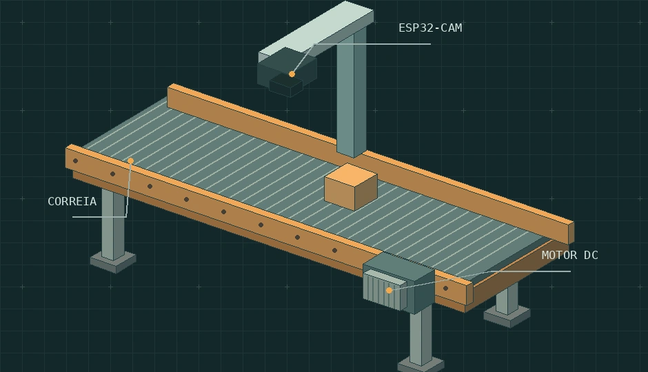

Grupo 2 · Projeto integrador
Mini Fábrica Inteligente
O objetivo da equipe é transportar um componente, detectar sua chegada e parar a correia para a câmera fotografá-lo.
- Materiais e tecnologias
- ESP32, motor DC, ponte H TB6612FNG, sensor ultrassônico e ESP32-CAM. O projeto integrado também prevê API, catálogo de componentes e reconhecimento com YOLOv8.
- Funcionamento na bancada
- Na versão de controle local, o operador calibra a esteira vazia e autoriza o início. Quando a peça entra na zona de detecção, o motor pausa por cinco segundos. A correia retoma o movimento e o sensor espera a área ficar livre para rearmar.
- Desafio e resultado
- A leitura varia mesmo com a esteira vazia. A calibração usa 32 amostras e dois limites de distância. Houve registro de detecção e retomada na bancada. No painel integrado, a câmera apareceu online enquanto o controlador ainda estava sem telemetria.
- Aprendizado e próximo teste
- Testar o motor isolado facilita localizar falhas. A próxima verificação é acompanhar a mesma peça desde a detecção até a fotografia e a resposta do modelo treinado.

Entender um trecho do programa
if (agora - ultimaMudanca >= INTERVALO_MS) {
ultimaMudanca = agora;
No primeiro teste, o ESP32 consulta o relógio e compara o tempo decorrido com 5.000 ms. Ao alcançar esse intervalo, o programa alterna o estado do motor.